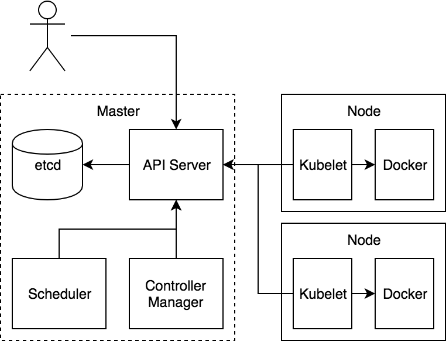
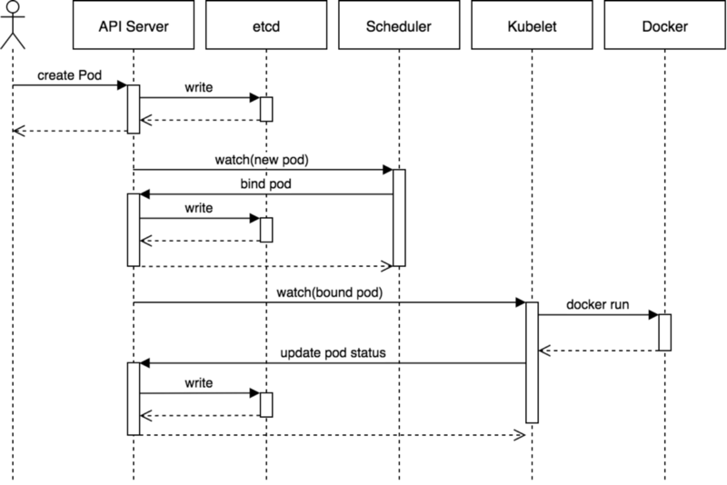
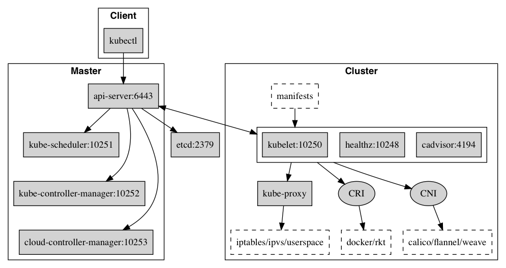
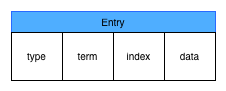
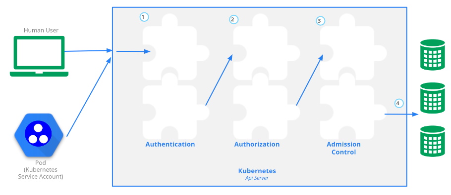

<!DOCTYPE html>
<!--[if IE 8]><html class="no-js lt-ie9" lang="en" > <![endif]-->
<!--[if gt IE 8]><!--> <html class="no-js" lang="en" > <!--<![endif]-->
<head>
  <meta charset="utf-8">
  
  <meta name="viewport" content="width=device-width, initial-scale=1.0">
  
  <title>核心组件 &mdash; Kubernetes alpha documentation</title>
  

  
  
    <link rel="shortcut icon" href="../_static/favicon.png"/>
  
  
  

  

  
  
    

  

  
  
    <link rel="stylesheet" href="../_static/css/theme.css" type="text/css" />
  

  

  
        <link rel="index" title="Index"
              href="../genindex.html"/>
        <link rel="search" title="Search" href="../search.html"/>
    <link rel="top" title="Kubernetes alpha documentation" href="../index.html"/>
    <link href="../_static/style.css" rel="stylesheet" type="text/css">


  
  <script src="../_static/js/modernizr.min.js"></script>

</head>

<body class="wy-body-for-nav" role="document">

   
  <div class="wy-grid-for-nav">

    
    <nav data-toggle="wy-nav-shift" class="wy-nav-side">
      <div class="wy-side-scroll">
        <div class="wy-side-nav-search">
          

          
            <a href="../index.html" class="icon icon-home"> Kubernetes
          

          
            
            
          
          </a>

          
            
            
              <div class="version">
                0.1
              </div>
            
          

          
<div role="search">
  <form id="rtd-search-form" class="wy-form" action="../search.html" method="get">
    <input type="text" name="q" placeholder="Search docs" />
    <input type="hidden" name="check_keywords" value="yes" />
    <input type="hidden" name="area" value="default" />
  </form>
</div>

          
        </div>

        <div class="wy-menu wy-menu-vertical" data-spy="affix" role="navigation" aria-label="main navigation">
          
            
            
              
            
            
              <ul>
<li class="toctree-l1"><a class="reference internal" href="../deployment_guide/deployment_guide.html">部署手册</a></li>
<li class="toctree-l1"><a class="reference internal" href="core_priciple.html">核心原理</a></li>
</ul>

            
          
        </div>
      </div>
    </nav>

    <section data-toggle="wy-nav-shift" class="wy-nav-content-wrap">

      
      <nav class="wy-nav-top" role="navigation" aria-label="top navigation">
        
          <i data-toggle="wy-nav-top" class="fa fa-bars"></i>
          <a href="../index.html">Kubernetes</a>
        
      </nav>


      
      <div class="wy-nav-content">
        <div class="rst-content">
          


<div role="navigation" aria-label="breadcrumbs navigation">

  <ul class="wy-breadcrumbs">
    
      <li><a href="../index.html">Docs</a> &raquo;</li>
        
      <li>核心组件</li>
    
    
      <li class="wy-breadcrumbs-aside">
        
            
            <a href="../_sources/core_principle/core_component.rst.txt" rel="nofollow"> View page source</a>
          
        
      </li>
    
  </ul>

  
  <hr/>
</div>
          <div role="main" class="document" itemscope="itemscope" itemtype="http://schema.org/Article">
           <div itemprop="articleBody">
            
  <div class="section" id="id1">
<h1>核心组件<a class="headerlink" href="#id1" title="Permalink to this headline">¶</a></h1>

<p>Kubernetes 主要由以下几个核心组件组成：</p>
<ul class="simple">
<li>etcd 保存了整个集群的状态；</li>
<li>apiserver 提供了资源操作的唯一入口，并提供认证、授权、访问控制、API 注册和发现等机制；</li>
<li>controller manager 负责维护集群的状态，比如故障检测、自动扩展、滚动更新等；</li>
<li>scheduler 负责维护容器的声明周期，同时也负责 Volume(CVI)和网络(CNI)的管理；</li>
<li>Container runtime 负责镜像管理以及 Pod 和容器的真正运行（CRI）；</li>
<li>kube-proxy 负责为 Service 提供 Cluster 内部的服务发现和负载均衡；</li>
</ul>
<div class="section" id="id2">
<h2>组件通信<a class="headerlink" href="#id2" title="Permalink to this headline">¶</a></h2>
<p>Kubernetes 多组件之间的通信原理为</p>
<ul class="simple">
<li>apiserver 负责 etcd 存储的所有操作，且只有 apiserver 才直接操作 etcd 集群</li>
<li>apiserver 对内（集群中的其他组件）和对外（用户）提供统一的 REST API，其他组件均通过 apiserver 进行通讯。<ul>
<li>controller manager、scheduler、kube-proxy 和 kube-let 等均通过 apiserver watch API 监测资源变化情况，并对资源做相应的操作。</li>
<li>所有需要更新资源状态的操作均通过 apiserver 的 REST API 进行</li>
</ul>
</li>
<li>apiserver 也会直接调用 Kubelet API（如 logs，exec，attach 等），默认不校验 kubelet 证书，但可以通过 <code class="docutils literal notranslate"><span class="pre">--kubelet-certificate-authority</span></code> 开启（而 GKE 通过 SSH隧道保护它们之间的通讯）</li>
</ul>

<ol class="arabic simple">
<li>用户通过 REST API 创建一个 Pod</li>
<li>apiserver 将其写入 etcd</li>
<li>scheduler 检测到未绑定 Node 的 Pod，开始调度并更新 Pod 的 Node 绑定</li>
<li>kubelet 检测到有新的 Pod 调度过来，通过 container runtime 运行该 Pod</li>
<li>kubelet 通过 container runtime 取到 Pod 状态，并更新到 apiserver 中</li>
</ol>
</div>
<div class="section" id="id3">
<h2>端口号<a class="headerlink" href="#id3" title="Permalink to this headline">¶</a></h2>

<div class="section" id="master-node-s">
<h3>Master node(s)<a class="headerlink" href="#master-node-s" title="Permalink to this headline">¶</a></h3>
<table border="1" class="docutils">
<colgroup>
<col width="15%" />
<col width="16%" />
<col width="18%" />
<col width="51%" />
</colgroup>
<thead valign="bottom">
<tr class="row-odd"><th class="head">Protocol</th>
<th class="head">Direction</th>
<th class="head">Port Range</th>
<th class="head">Purpose</th>
</tr>
</thead>
<tbody valign="top">
<tr class="row-even"><td>TCP</td>
<td>Inbound</td>
<td>6443</td>
<td>Kubernetes API Server</td>
</tr>
<tr class="row-odd"><td>TCP</td>
<td>Inbound</td>
<td>8080</td>
<td>Kubernetes API insecure server</td>
</tr>
<tr class="row-even"><td>TCP</td>
<td>Inbound</td>
<td>2379-2380</td>
<td>etcd server client API</td>
</tr>
<tr class="row-odd"><td>TCP</td>
<td>Inbound</td>
<td>10250</td>
<td>Kubelet API</td>
</tr>
<tr class="row-even"><td>TCP</td>
<td>Inbound</td>
<td>10251</td>
<td>kube-scheduler healthz</td>
</tr>
<tr class="row-odd"><td>TCP</td>
<td>Inbound</td>
<td>10252</td>
<td>kube-controller-manager healthz</td>
</tr>
<tr class="row-even"><td>TCP</td>
<td>Inbound</td>
<td>10253</td>
<td>cloud-controller-manager healthz</td>
</tr>
<tr class="row-odd"><td>TCP</td>
<td>Inbound</td>
<td>10255</td>
<td>Read-only Kubelet API</td>
</tr>
<tr class="row-even"><td>TCP</td>
<td>Inbound</td>
<td>10256</td>
<td>kebe-proxy healthz</td>
</tr>
</tbody>
</table>
</div>
<div class="section" id="worker-node-s">
<h3>Worker node(s)<a class="headerlink" href="#worker-node-s" title="Permalink to this headline">¶</a></h3>
<table border="1" class="docutils">
<colgroup>
<col width="18%" />
<col width="19%" />
<col width="23%" />
<col width="40%" />
</colgroup>
<thead valign="bottom">
<tr class="row-odd"><th class="head">Protocol</th>
<th class="head">Direction</th>
<th class="head">Port Range</th>
<th class="head">Purpose</th>
</tr>
</thead>
<tbody valign="top">
<tr class="row-even"><td>TCP</td>
<td>Inbound</td>
<td>4194</td>
<td>Kubelet cAdvisor</td>
</tr>
<tr class="row-odd"><td>TCP</td>
<td>Inbound</td>
<td>10248</td>
<td>Kubelet healthz</td>
</tr>
<tr class="row-even"><td>TCP</td>
<td>Inbound</td>
<td>10249</td>
<td>kube-proxy metrics</td>
</tr>
<tr class="row-odd"><td>TCP</td>
<td>Inbloud</td>
<td>10250</td>
<td>Kubelet API</td>
</tr>
<tr class="row-even"><td>TCP</td>
<td>Inbound</td>
<td>10255</td>
<td>Read-only Kubelet API</td>
</tr>
<tr class="row-odd"><td>TCP</td>
<td>Inblound</td>
<td>10256</td>
<td>kube-proxy healthz</td>
</tr>
<tr class="row-even"><td>TCP</td>
<td>Inbound</td>
<td>30000-32767</td>
<td>NodePort Services</td>
</tr>
</tbody>
</table>
</div>
</div>
<div class="section" id="etcd">
<h2>etcd<a class="headerlink" href="#etcd" title="Permalink to this headline">¶</a></h2>
<p>Etcd 是 CoreOS 基于 Raft 开发的分布式 key-value 存储，可用于服务发现、共享配置以及一致性保障（如数据库选主、分布式锁等）。</p>
<div class="section" id="id4">
<h3>Etcd 主要功能<a class="headerlink" href="#id4" title="Permalink to this headline">¶</a></h3>
<ul class="simple">
<li>基本的 key-value 存储</li>
<li>监听机制</li>
<li>key 的过期及续约机制，用于监控和服务发现</li>
<li>原子 CAS 和 CAD，用于分布式锁和 leader 选举</li>
</ul>
</div>
<div class="section" id="etcd-raft">
<h3>Etcd 基于 RAFT 的一致性<a class="headerlink" href="#etcd-raft" title="Permalink to this headline">¶</a></h3>
<div class="section" id="id5">
<h4>选举方法<a class="headerlink" href="#id5" title="Permalink to this headline">¶</a></h4>
<ol class="arabic simple">
<li>初始启动时，节点处于 follower 状态并被设定一个 election tiemout，如果在这一时间周期内没有收到来自 leader 的 heartbeat，节点将发起选举：将自己切换为 candidate 之后，向集群中其他 follower 节点发送请求，询问其是否选举自己成为 leader。</li>
<li>当收到来自集群中过半数节点的接受投票后，节点即成为leader，开始接受保存 client 的数据并向其他的 follower 节点同步日志。如果没有达成一致，则 candidate 随机选择一个等待间隔（150ms ~ 300ms）再次发起投片，得到集群中半数以上 follower 接受的 candidate 成为 leader。</li>
<li>leader 节点依靠定向向 follower 发送 headerbeat 来保持其地位。</li>
<li>任何时候如果其他 follower 在 election timeout 期间没有收到来自 leader 的 haertbeat，同样会将自己ed状态切换为 candidate 并发起选举。每成功选举一次，新的 leader 的任期（Term）都会比之前 leader 的任期大 1。</li>
</ol>
</div>
<div class="section" id="id6">
<h4>日志复制<a class="headerlink" href="#id6" title="Permalink to this headline">¶</a></h4>
<p>当前的 leader 收到客户端的日志（事务请求）后先把该日志追加本地的 log 中，然后通过 heartbaet 把该 Entry 同步给其他 Follower，Follower 接收到日志后记录日志然后向 Leader 发送 ACK，当 Leader 收到大多数 (n/2+1) Follower 的 ACK 信息后将该日志设置为已提交并追加到本地磁盘中，通知客户端并在下个 heartbeat 中 Leader 将通知所有的 Follower 将该日志存储在自己的本地磁盘中。</p>
</div>
<div class="section" id="id7">
<h4>安全性<a class="headerlink" href="#id7" title="Permalink to this headline">¶</a></h4>
<p>安全性是用于保证每个节点都执行相同序列的安全机制，如当某个 Follower 在当前 Leader commit Log 时变得不可用了，稍后可能该 Follower 又会被选举为 Leader，这时新 Leader 可能会用新的 Log 覆盖先前已 committed 的 Log，这就是导致节点执行不同序列；Safety 就是用于保证选举出来的 Leader 一定包含先前 committed Log 的机制；</p>
<ul class="simple">
<li>选举安全性（Election Safety）：每个任期（Term）只能选举出一个 Leader</li>
<li>Leader 完整性（Leader Completeness）：指 Leader 日志的完整性，当 Log 在任期 Term1 被 Commit 后，那么以后任期 Team2、Team3… 等的 Leader 必须包含该 Log；Raft 在选举阶段就使用 Term 的判断用于保证完整性：当请求投票的该 Candidate 的 Term 较大或 Term 较大或 Term 相同 Index 更大则投票，否则拒绝该请求。</li>
</ul>
</div>
<div class="section" id="id8">
<h4>失效处理<a class="headerlink" href="#id8" title="Permalink to this headline">¶</a></h4>
<p>Etcd 实现 raft 的时候，充分利用了 go 语言 CSP 并发模型和 chan 的魔法，向更进一步了解的可以去看源码，这里只简单分析下它的 wal 日志。</p>

<p>wal 日志是二进制的，解析出来后是以上数据结构 LogEntry。其中第一个字段 type，只有两种，一种是 0 表示 Normal，1 表示 ConfChange（ConfChange 表示 Etcd 本身的配置变更同步，比如有新的节点加入等）。第二个字段是 index，这个序号是严格有序递增的，代表变更序号。第四个字段是二进制的 data，将 raft request 对象的 pb 结构整个保存下。Etcd 源码下有个 tools/etcd-dump-logs，可以将 wal 日志 dump 成文本查看，可以协助分析 raft 协议。</p>
<p>raft 协议本身不关心应用数据，也就是 data 的部分，一致性都通过同步 wal 日志来实现，每个节点将从主节点收到 data apply 到本地存储，raft 只关心日志的同步状态，如果本地存储实现的有 bug，比如没有正确的将 data apply 到本地，也可能会导致数据不一致。</p>
</div>
<div class="section" id="etcd-v2-v3">
<h4>Etcd v2 与 v3<a class="headerlink" href="#etcd-v2-v3" title="Permalink to this headline">¶</a></h4>
<p>Etcd v2 和 v3 本质上是共享同一套 raft 协议代码的两个独立的应用，接口不一样，存储不一样，数据互相隔离。也就是说如果从 Etcd v2 升级到 Etcd v3，原来 v2 的数据还是只能用 v2 的接口访问，v3 的接口创建的数据也只能访问通过 v3 的接口访问。所以我们按照 v2 和 v3 分别分析。</p>
<p>推荐在 Kubernetes 集群中使用 Etcd v3，v2 版本已经在 kubernetes v1.11 中弃用。</p>
</div>
<div class="section" id="etcd-v2-watch">
<h4>Etcd v2 存储，Watch 以及过期机制<a class="headerlink" href="#etcd-v2-watch" title="Permalink to this headline">¶</a></h4>

<p>Etcd v2 是个纯内存的实现，并未实时将数据写入磁盘，持久化机制很简单，就是将 store 整合序列化成 json 写入文件。数据在内存中是一个简单的树状结构。比如以下数据存储到 Etcd 中的结构就如图所示。</p>
<div class="highlight-none notranslate"><div class="highlight"><pre><span></span>/nodes/1/name node1
/nodes/1/ip   192.168.1.1
</pre></div>
</div>
<p>store 中有一个全局的 currentIndex，每次变更，index 会加 1，然后每个 event 都会关联到 currentIndex。</p>
<p>当客户端调用 watch 接口（参数中增加 wait 参数）时，如果请求参数中有 waitIndex，并且 waitIndex 小于 currentIndex，则从 EventHistroy 表中查询 index 大于等于 waitIndex，并且和 wathc key 匹配的 event，如果有数据，则直接返回。如果历史表中没有或者请求没有带 waitIndex，则放入 WatchHub 中，每个 key 会关联一个 watcher 列表。当有变更操作时，变更生成的 event 会放入 EventHistroy 表中，同时通知和该 key 相关的 watcher。</p>
<p>这里有几个影响使用的细节问题：</p>
<ol class="arabic simple">
<li>EventHistroy 是有长度限制的，最长 1000。也就是说，如果你的客户端停了许久，然后重新 watch 的时候，可能和该 waitIndex 相关的 event 已经被淘汰了，这种情况下回丢失变更。</li>
<li>如果通知 watcher 的时候，出现了阻塞（每个 watcher 的 channel 有 100 个缓冲空间），Etcd 会直接把 watcher 删除，也就是会导致 wait 请求的链接中断，客户端需要重新连接。</li>
<li>Etcd store 的每个 node 中都保存了过期的时间，通过定时机制进行清理。</li>
</ol>
<p>从而可以看出，Etcd v2 的一些限制：</p>
<ol class="arabic simple">
<li>过期时间只能设置到每个 key 上，如果多个 key 要保证生命周期一致则比较困难。</li>
<li>watcher 只能 watch 某一个 key 以及其子节点（通过参数 recursive），不能进行多个 watch。</li>
<li>很难通过 watch 机制来实现完整的数据同步（有丢失变更的风险），所以当前的大多数使用方式是通过 watch 得知变更，然后通过 get 重新获取数据，并不完全依赖于 watch 的变更 event。</li>
</ol>
</div>
<div class="section" id="etcd-v3-watch">
<h4>Etcd v3 存储，Watch 以及过期机制<a class="headerlink" href="#etcd-v3-watch" title="Permalink to this headline">¶</a></h4>

<p>Etcd v3 将 watch 和 store 拆开实现，我们先分析下 store 的实现。</p>
<p>Etcd v3 store 分为两部分，一部分是内存中的索引，kvindex，是基于 google 开源的一个 golang 的 btree 实现的，另外一部分是后端存储。按照它的设计，backend 可以对接多种存储，当前使用的 boltdb。boltdb 是一个单机的支持事务的 kv 存储，Etcd 的事务是基于 boltdb 的事务实现的。Etcd 在 boltdb 中存储的 key 是 revision，value 是 Etcd 自己的 key-value 组合，也就是说 Etcd 会在 boltdb 中把每个版本都保存下，从而实现了多版本机制。</p>
<p>举个例子，用 etcdctl 通过批量接口写入两条记录：</p>
<div class="highlight-none notranslate"><div class="highlight"><pre><span></span>etcdctl txn &lt;&lt;&lt;&#39;
put key1 &quot;v1&quot;
put key2 &quot;v2&quot;

&#39;
</pre></div>
</div>
<p>再通过批量接口更新这两条记录：</p>
<div class="highlight-none notranslate"><div class="highlight"><pre><span></span>etcdctl txn &lt;&lt;&lt;&#39;
put key1 &quot;v12&quot;
put key2 &quot;v22&quot;

&#39;
</pre></div>
</div>
<p>biltdb 中其实有了 4 条数据：</p>
<div class="highlight-none notranslate"><div class="highlight"><pre><span></span>rev={3 0}, key=key1, value=&quot;v1&quot;
rev={3 1}, key=key2, value=&quot;v2&quot;
rev={4 0}, key=key1, value=&quot;v12&quot;
rev={4 1}, key=key2, value=&quot;v22&quot;
</pre></div>
</div>
<p>revision 主要由两部分组成，第一部分 main rev，每次事务进行加一，第二部分 sub rev，同一个事务中的每次操作加一。如上示例，第一次操作的 main rev 是 3，第二次是 4。当然这种机制大家想到的第一个问题就是空间问题，所以 Etcd 提供了命令和设置选项来控制 compact，同时支持 put 操作的参数来精确控制某个 key 的历史版本数。</p>
<p>了解了 Etcd 的磁盘存储，可以看出如果要从 boltdb 中查询数据，必须通过 revision，但客户端都是通过 key 来查询 value，所以 Etcd 的内存 kvindex 保存的就是 key 和 revision 之前的映射关系，用来加速查询。</p>
<p>然后我们再分析下 watch 机制的实现。Etcd v3 的 watch 机制支持 watch 某个固定的 key，也支持 watch 一个范围（可以用于模拟目录的结构的watch），所以 watchGroup 包含两种 watcher，一种是 key watchers，数据结构是每个 key 对应一组 watcher，另外一种是 range watchers，数据结构是一个 IntervalTree，方便通过区间查找到对应的 watcher。</p>
<p>同时，每个 WatchableStore 包含两种 watcherGroup，一种是 synced，一种是 unsynced，前者表示该 group 的 watcher 数据都已经同步完毕，在等待新的变更，后者表示 group 的 watcher 数据同步落后于当前最新变更，还在追赶。</p>
<p>当 Etcd 收到客户端的 watch 请求，如果请求携带了 revision 参数，则比较请求的 revision 和 store 当前的 revision，如果大于当前 revision，则放入 synced 组中，否则放入 unsynced 组。同时 Etcd 会启动一个后台的 goroutine 持续同步 unsynced 的 watcher，然后将其迁移到 synced 组，也就是这种机制下，Etcd v3 支持从任意版本开始 watch，没有 v2 的 1000 条历史 event 表限制的问题（当然这是指没有 compact 的情况下）。</p>
<p>另外我们前面提到的，Etcd v2 在通知客户端时，如果网络不好或者客户读取比较慢，发生了阻塞，则会直接关闭当前连接，客户端需要重新发起请求。Etcd v3 为了解决这个问题，专门维护了一个推送时阻塞的 watcher 队列，在另外的 goroutine 里进行重试。</p>
<p>Etcd v3 对过期机制也做了改进，过期时间设置在 lease 上，然后 key 和 lease 关联。这样可以实现多个 key 关联同一个 lease id，方便设置统一的过期时间，以及实现批量续租。</p>
<p>相比 Etcd v2，Etcd v3 的一些主要变化：</p>
<ol class="arabic simple">
<li>接口通过 grpc 提供 rpc 接口，放弃了 v2 的 http 接口。优势是长连接效率提升明显，缺点是使用不如以前方便，尤其对不方便维护长连接的场景。</li>
<li>废弃了原来的目录结构，编程纯粹的 kv，用户可以通过前缀匹配模式模拟目录。</li>
<li>内存中不再保存 value，同样的内存可以支持存储更多的 key。</li>
<li>watch 机制更稳定，基本上可以通过 watch 机制实现数据完全同步。</li>
<li>提供了批量操作以及事务机制，用户可以通过批量事务请求来实现 Etcd v2 的 CAS 机制（批量事务支持 if 条件判断）。</li>
</ol>
</div>
<div class="section" id="etcd-zookeeper-consul">
<h4>Etcd，Zookeeper，Consul 比较<a class="headerlink" href="#etcd-zookeeper-consul" title="Permalink to this headline">¶</a></h4>
<ul class="simple">
<li>Etcd 和 Zookeeper 提供的能力非常相似，都是通用的一致性元信息存储，都提供 watch 机制用于变更通知和分发，也都被分布式系统用来作为共享信息存储，在软件生态中所处的位置也几乎是一样的，可以互相替代的。二者除了实现细节，语言，一致性协议上的区别，最大的区别在周边生态圈。Zookeeper 是 Apache 下的，用 Java 写的，提供 rpc 接口，最早从 hadoop 项目中孵化出来，在分布式系统中得到广泛使用（hadoop,solr,kafka,mesos等）。Etcd 是 coreos 公司旗下的开源产品，比较新，以其简单好用的 rest 接口以及活跃的社区俘获了一批用户，在新的一些集群中得到使用（比如 kubernetes）。虽然 v3 为了性能也改成了二进制 rpc 接口了，但其易用性上比 Zookeeper 还是好一些。</li>
<li>而 Consul 的目标则更为具体一些，Etcd 和 Zookeeper 提供的是分布式一致性存储能力，具体的业务场景需要用户自己实现，比如服务发现，比如配置变更。而 Consul 则以服务发现和配置变更为主要目标，同时附带了 kv 存储。</li>
</ul>
</div>
<div class="section" id="id9">
<h4>Etcd 的周边工具<a class="headerlink" href="#id9" title="Permalink to this headline">¶</a></h4>
<ol class="arabic">
<li><p class="first"><a class="reference external" href="https://github.com/yunify/confd">confd</a></p>
<blockquote>
<div><p>在分布式系统中，理想情况下是应用程序直接和 Etcd 这样的服务发现/配置中心交互，通过监听 Etcd 进行服务发现以及配置变更。但我们还有许多历史遗留的程序，服务发现以及配置大多都是通过变更配置文件进行的。Etcd 自己的定位是通用的 kv 存储，所以并没有像 Consul 那样提供实现配置变更的机制和工具，而Confd就是用来实现这个目标的工具。</p>
<p>Confd 通过 watch 机制监听 Etcd 的变更，然后将数据同步到自己的一个本地存储。用户可以通过配置定义自己关注哪些 key 的变更，同时提供一个配置文件模板。Confd 一旦发现数据变更就使用最新数据渲染模板生成配置文件，如果新旧配置文件有变化，则进行替换，同时触发用户提供的 reload 脚本，让应用程序重新加载配置。</p>
<p>Confd 相当于实现了部分 Consul 的 agent 以及 consul-template 的功能，作者是 kubernetes 的 kelsey Hightower，但大神貌似很忙，没太多时间关注这个项目了，很久没有发布版本，我们着急用，所以 fork 了一份自己更新维护，主要增加了一些新的模板函数以及对 metad 后端的支持。</p>
</div></blockquote>
</li>
<li><p class="first"><a class="reference external" href="https://github.com/yunify/metad">metad</a></p>
<blockquote>
<div><p>服务注册的实现模式一般分为两种，一种是调度系统代为注册，一种是应用程序自己注册。调度系统代为注册的情况下，应用程序启动后需要有一种机制让应用程序支持【我是谁】，然后发现自己所在的集群以及自己的配置。Metad 提供这样一种机制，客户端请求 Metad 的一个固定的接口/self，由 Metad 告知应用程序其所属的元信息，简化了客户端的服务发现和配置变更逻辑。</p>
<p>Metad 通过保存一个 ip 到元信息路径的映射关系来做到这一点，当前后端支持 Etcd v3，提供简单好用的 http rest 接口。他会把 Etcd 的数据通过 watch 机制同步到本地内存中，相当于 Etcd 的一个代理。所以也可以把它当做 Etcd 的代理来使用，适用于不方便使用 Etcd v3 的 rpc 接口或者想降低 Etcd 压力的场景。</p>
</div></blockquote>
</li>
</ol>
</div>
<div class="section" id="id10">
<h4>Etcd 使用注意事项<a class="headerlink" href="#id10" title="Permalink to this headline">¶</a></h4>
<ol class="arabic">
<li><p class="first">Etcd cluster 初始化的问题</p>
<blockquote>
<div><p>如果集群第一次初始化启动的时候，有一台节点未启动，通过 v3 的接口访问的时候，会报告 Error: Etcdserver: not capable 错误。这时为兼容性考虑，集群启动时默认的 API 版本是 2.3，只有当集群中的所有节点都加入了，确认所有节点都支持 v3 接口时，才提升集群版本到 v3。这个只有第一次初始化集群的时候会遇到，如果集群已经初始化完毕，在挂掉节点，或者集群关闭重启（关闭重启的时候会从赤计划数据中加载集群 API 版本），都不会有影响。</p>
</div></blockquote>
</li>
<li><p class="first">Etcd 读请求的机制</p>
<blockquote>
<div><p>v2 quorum=true 的时候，读取是通过 raft 进行的，通过 cli 请求，该参数默认为 true。</p>
<p>v3 –consistency=”i” 的时候（默认）通过 raft 读取，否则读取本地数据。sdk 代码里则是通过是否打开： WithSerializable option 来控制。</p>
<p>一致性读取的情况下，每次读取也需要走一次 raft 协议，能保证一致性，但性能有损失，如果出现了网络分区，集群的少数节点是不能提供一致性读取的。但如果不设置该参数，真实直接从本地的 store 里读取，这样就损失了一致性。使用的时候需要注意根据应用场景设置这个参数，在一致性和可用性之间进行取舍。</p>
</div></blockquote>
</li>
<li><p class="first">Etcd 的 compact 机制</p>
<blockquote>
<div><p>Etcd 默认不会自动 compact，需要设置启动参数，或者通过命令进行 compact，如果变更频繁建议设置，否则会导致空间和内存的浪费以及错误。Etcd v3 的默认的 backend quota 2GB，如果不 compact，boltdb 文件大小超过这个限制后，就会报错 <code class="docutils literal notranslate"><span class="pre">Error:</span> <span class="pre">etcdserver:</span> <span class="pre">mvcc:</span> <span class="pre">database</span> <span class="pre">space</span> <span class="pre">exceeded</span></code>，导致数据无法写入。</p>
</div></blockquote>
</li>
</ol>
</div>
<div class="section" id="id11">
<h4>etcd 的问题<a class="headerlink" href="#id11" title="Permalink to this headline">¶</a></h4>
<p>当前 Etcd 的 raft 实现保证了多个节点数据之间的同步，但明显的一个问题就是扩充节点不能解决容量问题。要想解决容量问题，只能进行分片，但分片后如何使用 raft 同步数据？只能实现一个 multiple group raft，每个分片的多个副本组成一个虚拟的 raft group，通过 raft 实现数据同步。当前实现了 multiple group raft 的有 TiKV 和 Cockroachdb，但尚未一个独立通用的。理论上来说，如果有了这套 multiple group raft，后面挂个持久化的 kv 就是一个分布式 kv 存储，挂个内存 kv 就是分布式缓存，挂个 lucene 就是分布式搜索引擎。当然这只是理论上，要真实现复杂度还是不小。</p>
</div>
</div>
</div>
<div class="section" id="api-server">
<h2>API Server<a class="headerlink" href="#api-server" title="Permalink to this headline">¶</a></h2>
<p>Kuber-apiserver 是 Kubernetes 最重要的核心组件之一，主要提供一下的功能</p>
<ul class="simple">
<li>提供集群管理的 REST API 接口，包括认证授权、数据校验以及集群状态变更等</li>
<li>提供其他模块之间的数据交互和通讯的枢纽（其他模块通过 API Server 查询或修改数据，只有 API Server 才直接操作 etcd）</li>
</ul>
<div class="section" id="rest-api">
<h3>REST API<a class="headerlink" href="#rest-api" title="Permalink to this headline">¶</a></h3>
<p>kube-apiserver 支持同时提供 https（默认监听在 6443 端口）和 http API (默认监听在 127.0.0.1 的 8080 端口)，其中 http API 是非安全接口，不做任何认证授权机制，不建议生产环境启用。两个接口提供 REST API 格式相同，参考 <a class="reference external" href="https://kubernetes.io/docs/api-reference/v1.8/">Kubernetes API Reference</a> 查看所有 API 的调用格式。</p>
<p>在实际使用中，通常通过 kubectl 来访问 apiserver，也可以通过 Kubernetes 各个语言的 client 库来访问 apiserver。在使用 kubectl 时，打开调用日志也可以看到每个 API 调用的格式，比如：</p>
<div class="highlight-bash notranslate"><div class="highlight"><pre><span></span>$ kubectl --v<span class="o">=</span><span class="m">8</span> get pods
</pre></div>
</div>
<p>可以通过 <code class="docutils literal notranslate"><span class="pre">kubectl</span> <span class="pre">api-versions</span></code> 和 <code class="docutils literal notranslate"><span class="pre">kubectl</span> <span class="pre">api-resources</span></code> 查询 Kubernetes API 支持的 API 版本以及资源对象。</p>
<div class="highlight-bash notranslate"><div class="highlight"><pre><span></span>$ kubectl api-versions
admissionregistration.k8s.io/v1beta1
apiextensions.k8s.io/v1beta1
apiregistration.k8s.io/v1beta1
apps.openshift.io/v1
apps/v1
apps/v1beta1
apps/v1beta2
authentication.k8s.io/v1
authentication.k8s.io/v1beta1
authorization.k8s.io/v1
authorization.k8s.io/v1beta1
authorization.openshift.io/v1
autoscaling/v1
autoscaling/v2beta1
batch/v1
batch/v1beta1
batch/v2alpha1
build.openshift.io/v1
certificates.k8s.io/v1beta1
events.k8s.io/v1beta1
extensions/v1beta1
image.openshift.io/v1
network.openshift.io/v1
networking.k8s.io/v1
oauth.openshift.io/v1
policy/v1beta1
project.openshift.io/v1
quota.openshift.io/v1
rbac.authorization.k8s.io/v1
rbac.authorization.k8s.io/v1beta1
route.openshift.io/v1
security.openshift.io/v1
servicecatalog.k8s.io/v1beta1
settings.k8s.io/v1alpha1
storage.k8s.io/v1
storage.k8s.io/v1beta1
template.openshift.io/v1
user.openshift.io/v1
v1

$ kubectl api-resources --api-group<span class="o">=</span>storage.k8s.io
NAME             SHORTNAMES   APIGROUP         NAMESPACED   KIND
storageclasses   sc           storage.k8s.io   <span class="nb">false</span>        StorageClass
</pre></div>
</div>
</div>
<div class="section" id="openapi-swagger">
<h3>OpenAPI 和 Swagger<a class="headerlink" href="#openapi-swagger" title="Permalink to this headline">¶</a></h3>
<p>通过 <code class="docutils literal notranslate"><span class="pre">/Swaggerapi</span></code> 可以查看 Swagger API，<code class="docutils literal notranslate"><span class="pre">/openapi/v2</span></code> 查看 OpenAPI。
开启 <code class="docutils literal notranslate"><span class="pre">--enable-swagger-ui=true</span></code> 后还可以通过 <code class="docutils literal notranslate"><span class="pre">/swagger-ui</span></code> 访问 Swagger UI。
根据 OpenAPI 也可以生成各种语言的客户端，比如可以用下面的命令生成 Go 语言的客户端：</p>
<div class="highlight-bash notranslate"><div class="highlight"><pre><span></span>git clone https://github.com/kubernetes-client/gen /tmp/gen
cat &gt;go.settings <span class="s">&lt;&lt;EOF</span>
<span class="s"># Kubernetes branch name</span>
<span class="s">export KUBERNETES_BRANCH=&quot;release-1.11&quot;</span>

<span class="s"># client version for packaging and releasing.</span>
<span class="s">export CLIENT_VERSION=&quot;1.0&quot;</span>

<span class="s"># Name of the release package</span>
<span class="s">export PACKAGE_NAME=&quot;client-go&quot;</span>
<span class="s">EOF</span>

/tmp/gen/openapi/go.sh ./client-go ./go.settings
</pre></div>
</div>
</div>
<div class="section" id="id12">
<h3>访问控制<a class="headerlink" href="#id12" title="Permalink to this headline">¶</a></h3>
<p>Kubernetes API 的每个请求都会经过多阶段的访问控制之后才会被接受，这包括认证、授权以及准入控制（Admission Control）等。</p>

</div>
<div class="section" id="id13">
<h3>认证<a class="headerlink" href="#id13" title="Permalink to this headline">¶</a></h3>
<p>开启 TLS 时，所有请求都需要首先认证。Kubernetes 支持多种认证机制，并支持同时开启多个认证插件（只要有一个认证通过即可）。如果认证成功，则用户的 <code class="docutils literal notranslate"><span class="pre">username</span></code> 会传入授权模块做进一步授权验证；而对于认证失败的请求则返回 HTTP 401。</p>
<div class="line-block">
<div class="line"><strong>Kubernetes 不直接管理用户</strong></div>
<div class="line">虽然 Kubernetes 认证和授权用到了 username，但 Kubernetes 并不直接管理用户，不能创建 <code class="docutils literal notranslate"><span class="pre">user</span></code> 对象，也不存储 username。</div>
</div>
<p>更多认证模块的使用方法可以参考 Kubernetes 认证插件。</p>
</div>
<div class="section" id="id14">
<h3>授权<a class="headerlink" href="#id14" title="Permalink to this headline">¶</a></h3>
<p>认证之后的请求就到了授权模块。跟认证类似，Kubernetes 也支持多种授权机制，并支持同时开启多个授权插件（只要有一个验证通过即可）。如果授权成功，则用户的请求会发送到准入控制模块做进一步的请求验证；而对于授权失败的请求则返回 HTTP 403。</p>
<p>更多授权模块的使用方法可以参考 Kubernetes 授权插件。</p>
</div>
<div class="section" id="id15">
<h3>准入控制<a class="headerlink" href="#id15" title="Permalink to this headline">¶</a></h3>
<p>准入控制（Admission Control）用来对请求做进一步的验证或添加默认参数。不同于授权和认证只关心请求的用户和操作，准入控制还处理请求的内容，并且仅对创建、更新、删除或连接（如代理）等有效，而对读操作无效。准入控制也支持同时开启多个插件，他们依次调用，只有全部插件都通过请求才可以放过进入系统。</p>
</div>
<div class="section" id="apiserver">
<h3>启动 apiserver 示例<a class="headerlink" href="#apiserver" title="Permalink to this headline">¶</a></h3>
<div class="highlight-none notranslate"><div class="highlight"><pre><span></span>kube-apiserver --feature-gates=AllAlpha=true --runtime-config=api/all=true \
    --requestheader-allowed-names=front-proxy-client \
    --client-ca-file=/etc/kubernetes/pki/ca.crt \
    --allow-privileged=true \
    --experimental-bootstrap-token-auth=true \
    --storage-backend=etcd3 \
    --requestheader-username-headers=X-Remote-User \
    --requestheader-extra-headers-prefix=X-Remote-Extra- \
    --service-account-key-file=/etc/kubernetes/pki/sa.pub \
    --tls-cert-file=/etc/kubernetes/pki/apiserver.crt \
    --tls-private-key-file=/etc/kubernetes/pki/apiserver.key \
    --kubelet-client-certificate=/etc/kubernetes/pki/apiserver-kubelet-client.crt \
    --requestheader-client-ca-file=/etc/kubernetes/pki/front-proxy-ca.crt \
    --insecure-port=8080 \
    --admission-control=NamespaceLifecycle,LimitRanger,ServiceAccount,PersistentVolumeLabel,DefaultStorageClass,ResourceQuota,DefaultTolerationSeconds \
    --requestheader-group-headers=X-Remote-Group \
    --kubelet-client-key=/etc/kubernetes/pki/apiserver-kubelet-client.key \
    --secure-port=6443 \
    --kubelet-preferred-address-types=InternalIP,ExternalIP,Hostname \
    --service-cluster-ip-range=10.96.0.0/12 \
    --authorization-mode=RBAC \
    --advertise-address=192.168.0.20 --etcd-servers=http://127.0.0.1:2379
</pre></div>
</div>
</div>
<div class="section" id="id16">
<h3>工作原理<a class="headerlink" href="#id16" title="Permalink to this headline">¶</a></h3>
<p>Kube-apiserver 提供了 Kubernetes 的 REST API，实现了认证、授权、准入控制等安全校验功能，同时也负责集群状态的存储操作（通过 etcd）。</p>

</div>
<div class="section" id="api">
<h3>API 访问<a class="headerlink" href="#api" title="Permalink to this headline">¶</a></h3>
<p>有多种方式可以访问 Kubernetes 提供的 REST API：</p>
<ul>
<li><p class="first"><a class="reference external" href="https://kubernetes.feisky.xyz/zh/components/kubectl.html">kubectl</a> 命令行工具</p>
</li>
<li><p class="first">SDK，支持多种语言</p>
<blockquote>
<div><ul class="simple">
<li><a class="reference external" href="https://github.com/kubernetes/client-go">Go</a></li>
<li><a class="reference external" href="https://github.com/kubernetes-incubator/client-python">Python</a></li>
<li><a class="reference external" href="https://github.com/kubernetes-client/javascript">javascript</a></li>
<li><a class="reference external" href="https://github.com/kubernetes-client/java">Java</a></li>
<li><a class="reference external" href="https://github.com/kubernetes-client/csharp">CSharp</a></li>
<li>其他 <a class="reference external" href="https://www.openapis.org/">OpenAPI</a> 支持的语言，可以通过 <a class="reference external" href="https://github.com/kubernetes-client/gen">gen</a> 工具生成相应的 client</li>
</ul>
</div></blockquote>
</li>
</ul>
</div>
<div class="section" id="id17">
<h3>kubectl<a class="headerlink" href="#id17" title="Permalink to this headline">¶</a></h3>
<div class="highlight-bash notranslate"><div class="highlight"><pre><span></span>kubectl get --raw /api/v1/namespaces
kubectl get --raw /apis/metrics.k8s.io/v1beta1/nodes
kubectl get --raw /apis/metrics.k8s.io/v1beta1/pods
</pre></div>
</div>
</div>
<div class="section" id="kubectl-proxy">
<h3>kubectl proxy<a class="headerlink" href="#kubectl-proxy" title="Permalink to this headline">¶</a></h3>
<div class="highlight-bash notranslate"><div class="highlight"><pre><span></span>$ kubectl proxy --port<span class="o">=</span><span class="m">8080</span> <span class="p">&amp;</span>

$ curl http://localhost:8080/api/
<span class="o">{</span>
  <span class="s2">&quot;versions&quot;</span>: <span class="o">[</span>
    <span class="s2">&quot;v1&quot;</span>
  <span class="o">]</span>
<span class="o">}</span>
</pre></div>
</div>
</div>
<div class="section" id="curl">
<h3>curl<a class="headerlink" href="#curl" title="Permalink to this headline">¶</a></h3>
<div class="highlight-bash notranslate"><div class="highlight"><pre><span></span><span class="c1"># In Pods with service account.</span>
$ <span class="nv">TOKEN</span><span class="o">=</span><span class="k">$(</span>cat /run/secrets/kubernetes.io/serviceaccount/token<span class="k">)</span>
$ <span class="nv">CACERT</span><span class="o">=</span>/run/secrets/kubernetes.io/serviceaccount/ca.crt
$ curl --cacert <span class="nv">$CACERT</span> --header <span class="s2">&quot;Authorization: Bearer </span><span class="nv">$TOKEN</span><span class="s2">&quot;</span>  https://<span class="nv">$KUBERNETES_SERVICE_HOST</span>:<span class="nv">$KUBERNETES_SERVICE_PORT</span>/api
<span class="o">{</span>
  <span class="s2">&quot;kind&quot;</span>: <span class="s2">&quot;APIVersions&quot;</span>,
  <span class="s2">&quot;versions&quot;</span>: <span class="o">[</span>
    <span class="s2">&quot;v1&quot;</span>
  <span class="o">]</span>,
  <span class="s2">&quot;serverAddressByClientCIDRs&quot;</span>: <span class="o">[</span>
    <span class="o">{</span>
      <span class="s2">&quot;clientCIDR&quot;</span>: <span class="s2">&quot;0.0.0.0/0&quot;</span>,
      <span class="s2">&quot;serverAddress&quot;</span>: <span class="s2">&quot;10.0.1.149:443&quot;</span>
    <span class="o">}</span>
  <span class="o">]</span>
<span class="o">}</span>
</pre></div>
</div>
<div class="highlight-bash notranslate"><div class="highlight"><pre><span></span><span class="c1"># Outside of Pods.</span>
$ <span class="nv">APISERVER</span><span class="o">=</span><span class="k">$(</span>kubectl config view <span class="p">|</span> grep server <span class="p">|</span> cut -f <span class="m">2</span>- -d <span class="s2">&quot;:&quot;</span> <span class="p">|</span> tr -d <span class="s2">&quot; &quot;</span><span class="k">)</span>
$ <span class="nv">TOKEN</span><span class="o">=</span><span class="k">$(</span>kubectl describe secret <span class="k">$(</span>kubectl get secrets <span class="p">|</span> grep default <span class="p">|</span> cut -f1 -d <span class="s1">&#39;&#39;</span><span class="k">)</span> <span class="p">|</span> grep -E<span class="s1">&#39;^token&#39;</span><span class="p">|</span> cut -f2 -d<span class="s1">&#39;:&#39;</span><span class="p">|</span> tr -d<span class="s1">&#39;\t&#39;</span><span class="k">)</span>
$ curl <span class="nv">$APISERVER</span>/api --header <span class="s2">&quot;Authorization: Bearer </span><span class="nv">$TOKEN</span><span class="s2">&quot;</span> --insecure
<span class="o">{</span>
  <span class="s2">&quot;kind&quot;</span>: <span class="s2">&quot;APIVersions&quot;</span>,
  <span class="s2">&quot;versions&quot;</span>: <span class="o">[</span>
    <span class="s2">&quot;v1&quot;</span>
  <span class="o">]</span>,
  <span class="s2">&quot;serverAddressByClientCIDRs&quot;</span>: <span class="o">[</span>
    <span class="o">{</span>
      <span class="s2">&quot;clientCIDR&quot;</span>: <span class="s2">&quot;0.0.0.0/0&quot;</span>,
      <span class="s2">&quot;serverAddress&quot;</span>: <span class="s2">&quot;10.0.1.149:443&quot;</span>
    <span class="o">}</span>
  <span class="o">]</span>
<span class="o">}</span>
</pre></div>
</div>
</div>
<div class="section" id="id18">
<h3>API 参考文档<a class="headerlink" href="#id18" title="Permalink to this headline">¶</a></h3>
<p>最近 4 个稳定版本的 API 参看文档为：</p>
<ul class="simple">
<li><a class="reference external" href="https://kubernetes.io/docs/reference/generated/kubernetes-api/v1.11/">v1.11 API Reference</a></li>
<li><a class="reference external" href="https://kubernetes.io/docs/reference/generated/kubernetes-api/v1.10/">v1.10 API Reference</a></li>
<li><a class="reference external" href="https://kubernetes.io/docs/api-reference/v1.9/">v1.9 API Reference</a></li>
<li><a class="reference external" href="https://kubernetes.io/docs/api-reference/v1.8/">v1.8 API Reference</a></li>
</ul>
</div>
</div>
<div class="section" id="kube-scheduler">
<h2>kube-scheduler<a class="headerlink" href="#kube-scheduler" title="Permalink to this headline">¶</a></h2>
<p>kube-scheduler 负责分配调度 Pod 到集群内的节点上，它监听 kube-apiserver，查询还未分配 Node 的 Pod，然后根据调度策略为这些 Pod 分配节点（更新 Pod 的 <cite>NodeName</cite> 字段）。</p>
<p>调度器需要充分考虑诸多的因素：</p>
<ul class="simple">
<li>公平调度</li>
<li>资源高效利用</li>
<li>Qos</li>
<li>affinity 和 anti-affinity</li>
<li>数据本地化（data locality）</li>
<li>内部负载干扰（inter-workload interference）</li>
<li>deadlines</li>
</ul>
<div class="section" id="node">
<h3>指定 Node 节点调度<a class="headerlink" href="#node" title="Permalink to this headline">¶</a></h3>
<p>有三种方式指定 Pod 只运行在指定的 Node 节点上</p>
<ul class="simple">
<li>nodeSelector：只调度到匹配指定的 label 的 Node 上</li>
<li>nodeAffinity：功能更丰富的 Node 选择器，比如支持集合操作</li>
<li>podAffinity：调度到满足条件的 Pod 所在的 Node 上</li>
</ul>
</div>
<div class="section" id="nodeselector">
<h3>nodeSelector 示例<a class="headerlink" href="#nodeselector" title="Permalink to this headline">¶</a></h3>
<p>首先给 Node 打上标签</p>
<div class="highlight-none notranslate"><div class="highlight"><pre><span></span>kubectl label nodes node-01 disktype=ssd
</pre></div>
</div>
<p>然后再 daemonset 中指定 nodeSelector 为 <code class="docutils literal notranslate"><span class="pre">disktype=ssd</span></code>:</p>
<div class="highlight-none notranslate"><div class="highlight"><pre><span></span>spec:
  nodeSelector:
    disktype: ssd
</pre></div>
</div>
</div>
<div class="section" id="nodeaffinity">
<h3>nodeAffinity 示例<a class="headerlink" href="#nodeaffinity" title="Permalink to this headline">¶</a></h3>
<p>nodeAffinity 目前支持两种：<cite>requiredDuringSchedulingIgnoredDuringExecution</cite> 和 <cite>preferredDuringSchedulingIgnoredDuringExecution</cite>，分别代表必须满足条件和优选条件。比如下面的例子代表调度到包含标签 <code class="docutils literal notranslate"><span class="pre">kubernetes.io/e2e-az-name</span></code> 并且值为 e2e-az1 或者 e2e-az2 的 Node 上，并且优选还带有标签 <code class="docutils literal notranslate"><span class="pre">another-node-label-key=another-node-label-value</span></code> 的 Node。</p>
<div class="highlight-yaml notranslate"><div class="highlight"><pre><span></span><span class="l l-Scalar l-Scalar-Plain">apiVersion</span><span class="p p-Indicator">:</span> <span class="l l-Scalar l-Scalar-Plain">v1</span>
<span class="l l-Scalar l-Scalar-Plain">kind</span><span class="p p-Indicator">:</span> <span class="l l-Scalar l-Scalar-Plain">Pod</span>
<span class="l l-Scalar l-Scalar-Plain">metadata</span><span class="p p-Indicator">:</span>
  <span class="l l-Scalar l-Scalar-Plain">name</span><span class="p p-Indicator">:</span> <span class="l l-Scalar l-Scalar-Plain">with-node-affinity</span>
<span class="l l-Scalar l-Scalar-Plain">spec</span><span class="p p-Indicator">:</span>
  <span class="l l-Scalar l-Scalar-Plain">affinity</span><span class="p p-Indicator">:</span>
    <span class="l l-Scalar l-Scalar-Plain">nodeAffinity</span><span class="p p-Indicator">:</span>
      <span class="l l-Scalar l-Scalar-Plain">requiredDuringSchedulingIgnoredDuringExecution</span><span class="p p-Indicator">:</span>
        <span class="l l-Scalar l-Scalar-Plain">nodeSelectorTerms</span><span class="p p-Indicator">:</span>
        <span class="p p-Indicator">-</span> <span class="l l-Scalar l-Scalar-Plain">matchExpressions</span><span class="p p-Indicator">:</span>
          <span class="p p-Indicator">-</span> <span class="l l-Scalar l-Scalar-Plain">key</span><span class="p p-Indicator">:</span> <span class="l l-Scalar l-Scalar-Plain">kubernetes.io/e2e-az-name</span>
            <span class="l l-Scalar l-Scalar-Plain">operator</span><span class="p p-Indicator">:</span> <span class="l l-Scalar l-Scalar-Plain">In</span>
            <span class="l l-Scalar l-Scalar-Plain">values</span><span class="p p-Indicator">:</span>
            <span class="p p-Indicator">-</span> <span class="l l-Scalar l-Scalar-Plain">e2e-az1</span>
            <span class="p p-Indicator">-</span> <span class="l l-Scalar l-Scalar-Plain">e2e-az2</span>
      <span class="l l-Scalar l-Scalar-Plain">preferredDuringSchedulingIgnoredDuringExecution</span><span class="p p-Indicator">:</span>
      <span class="p p-Indicator">-</span> <span class="l l-Scalar l-Scalar-Plain">weight</span><span class="p p-Indicator">:</span> <span class="l l-Scalar l-Scalar-Plain">1</span>
        <span class="l l-Scalar l-Scalar-Plain">preference</span><span class="p p-Indicator">:</span>
          <span class="l l-Scalar l-Scalar-Plain">matchExpressions</span><span class="p p-Indicator">:</span>
          <span class="p p-Indicator">-</span> <span class="l l-Scalar l-Scalar-Plain">key</span><span class="p p-Indicator">:</span> <span class="l l-Scalar l-Scalar-Plain">another-node-label-key</span>
            <span class="l l-Scalar l-Scalar-Plain">operator</span><span class="p p-Indicator">:</span> <span class="l l-Scalar l-Scalar-Plain">In</span>
            <span class="l l-Scalar l-Scalar-Plain">values</span><span class="p p-Indicator">:</span>
            <span class="p p-Indicator">-</span> <span class="l l-Scalar l-Scalar-Plain">another-node-label-value</span>
  <span class="l l-Scalar l-Scalar-Plain">containers</span><span class="p p-Indicator">:</span>
  <span class="p p-Indicator">-</span> <span class="l l-Scalar l-Scalar-Plain">name</span><span class="p p-Indicator">:</span> <span class="l l-Scalar l-Scalar-Plain">with-node-affinity</span>
    <span class="l l-Scalar l-Scalar-Plain">image</span><span class="p p-Indicator">:</span> <span class="l l-Scalar l-Scalar-Plain">gcr.io/google_containers/pause:2.0</span>
</pre></div>
</div>
</div>
<div class="section" id="podaffinity">
<h3>podAffinity 示例<a class="headerlink" href="#podaffinity" title="Permalink to this headline">¶</a></h3>
<p>podAffinity 基于 Pod 的标签来选择 Node，仅调度到满足条件 Pod 所在的 Node 上，支持 podAffinity 和 PodAntiAffinity。这个功能比较绕，以下面的例子为例：</p>
<ul class="simple">
<li>如果一个 “Node 所在 Zone 中包含至少一个带有 <code class="docutils literal notranslate"><span class="pre">security=S1</span></code> 标签且运行中的 Pod”，那么可以调度到该 Node</li>
<li>不调度到“包含至少一个带有 <code class="docutils literal notranslate"><span class="pre">security=S2</span></code> 标签且运行中 Pod” 的 Node 上。</li>
</ul>
<div class="highlight-yaml notranslate"><div class="highlight"><pre><span></span><span class="l l-Scalar l-Scalar-Plain">apiVersion</span><span class="p p-Indicator">:</span> <span class="l l-Scalar l-Scalar-Plain">v1</span>
<span class="l l-Scalar l-Scalar-Plain">kind</span><span class="p p-Indicator">:</span> <span class="l l-Scalar l-Scalar-Plain">Pod</span>
<span class="l l-Scalar l-Scalar-Plain">metadata</span><span class="p p-Indicator">:</span>
  <span class="l l-Scalar l-Scalar-Plain">name</span><span class="p p-Indicator">:</span> <span class="l l-Scalar l-Scalar-Plain">with-pod-affinity</span>
<span class="l l-Scalar l-Scalar-Plain">spec</span><span class="p p-Indicator">:</span>
  <span class="l l-Scalar l-Scalar-Plain">affinity</span><span class="p p-Indicator">:</span>
    <span class="l l-Scalar l-Scalar-Plain">podAffinity</span><span class="p p-Indicator">:</span>
      <span class="l l-Scalar l-Scalar-Plain">requiredDuringSchedulingIgnoredDuringExecution</span><span class="p p-Indicator">:</span>
      <span class="p p-Indicator">-</span> <span class="l l-Scalar l-Scalar-Plain">labelSelector</span><span class="p p-Indicator">:</span>
          <span class="l l-Scalar l-Scalar-Plain">matchExpressions</span><span class="p p-Indicator">:</span>
          <span class="p p-Indicator">-</span> <span class="l l-Scalar l-Scalar-Plain">key</span><span class="p p-Indicator">:</span> <span class="l l-Scalar l-Scalar-Plain">security</span>
            <span class="l l-Scalar l-Scalar-Plain">operator</span><span class="p p-Indicator">:</span> <span class="l l-Scalar l-Scalar-Plain">In</span>
            <span class="l l-Scalar l-Scalar-Plain">values</span><span class="p p-Indicator">:</span>
            <span class="p p-Indicator">-</span> <span class="l l-Scalar l-Scalar-Plain">S1</span>
        <span class="l l-Scalar l-Scalar-Plain">topologyKey</span><span class="p p-Indicator">:</span> <span class="l l-Scalar l-Scalar-Plain">failure-domain.beta.kubernetes.io/zone</span>
    <span class="l l-Scalar l-Scalar-Plain">podAntiAffinity</span><span class="p p-Indicator">:</span>
      <span class="l l-Scalar l-Scalar-Plain">preferredDuringSchedulingIgnoredDuringExecution</span><span class="p p-Indicator">:</span>
      <span class="p p-Indicator">-</span> <span class="l l-Scalar l-Scalar-Plain">weight</span><span class="p p-Indicator">:</span> <span class="l l-Scalar l-Scalar-Plain">100</span>
        <span class="l l-Scalar l-Scalar-Plain">podAffinityTerm</span><span class="p p-Indicator">:</span>
          <span class="l l-Scalar l-Scalar-Plain">labelSelector</span><span class="p p-Indicator">:</span>
            <span class="l l-Scalar l-Scalar-Plain">matchExpressions</span><span class="p p-Indicator">:</span>
            <span class="p p-Indicator">-</span> <span class="l l-Scalar l-Scalar-Plain">key</span><span class="p p-Indicator">:</span> <span class="l l-Scalar l-Scalar-Plain">security</span>
              <span class="l l-Scalar l-Scalar-Plain">operator</span><span class="p p-Indicator">:</span> <span class="l l-Scalar l-Scalar-Plain">In</span>
              <span class="l l-Scalar l-Scalar-Plain">values</span><span class="p p-Indicator">:</span>
              <span class="p p-Indicator">-</span> <span class="l l-Scalar l-Scalar-Plain">S2</span>
          <span class="l l-Scalar l-Scalar-Plain">topologyKey</span><span class="p p-Indicator">:</span> <span class="l l-Scalar l-Scalar-Plain">kubernetes.io/hostname</span>
  <span class="l l-Scalar l-Scalar-Plain">containers</span><span class="p p-Indicator">:</span>
  <span class="p p-Indicator">-</span> <span class="l l-Scalar l-Scalar-Plain">name</span><span class="p p-Indicator">:</span> <span class="l l-Scalar l-Scalar-Plain">with-pod-affinity</span>
    <span class="l l-Scalar l-Scalar-Plain">image</span><span class="p p-Indicator">:</span> <span class="l l-Scalar l-Scalar-Plain">gcr.io/google_containers/pause:2.0</span>
</pre></div>
</div>
</div>
<div class="section" id="taints-tolerations">
<h3>Taints 和 tolerations<a class="headerlink" href="#taints-tolerations" title="Permalink to this headline">¶</a></h3>
<p>Taints 和 tolerations 用于保证 Pod 不被调度到不合适的 Node 上，其中 Taint 应用于 Node 上，而 toleration 则应用于 Pod 上。</p>
<p>目前支持的 taint 类型</p>
<ul class="simple">
<li>NoSchedule：新的 Pod 不调度到该 Node 上，不影响正在运行的 Pod</li>
<li>PreferNoSchedule：soft 版的 NodeSchedule，尽量不调度到该 Node 上</li>
<li>NoExecute：新的 Pod 不调度到该 Node 上，并且删除（evict）已在运行的 Pod。Pod 可以增加一个时间（tolerationSeconds）</li>
</ul>
<p>然而，当 Pod 的 Tolerations 匹配 Node 的所有 Taints 的时候可以调度到该 Node 上；当 Pod 是已经运行的时候，也不会被删除（evicted）。另外对于 NoExecute，如果 Pod 增加了一个 tolerationSeconds，则会在该时间之后才删除 Pod。</p>
<p>比如，假设 node1 上应用以下几个 taint</p>
<div class="highlight-none notranslate"><div class="highlight"><pre><span></span>kubectl taint nodes node1 key1=value1:NoSchedule
kubectl taint nodes node1 key1=value1:NoExecute
kubectl taint nodes node1 key2=value2:NoSchedule
</pre></div>
</div>
<p>下面的这个 Pod 由于没有 tolerate <code class="docutils literal notranslate"><span class="pre">key2=value2:NoSchedule</span></code> 无法调度到 node1 上</p>
<div class="highlight-none notranslate"><div class="highlight"><pre><span></span>tolerations:
- key: &quot;key1&quot;
  operator: &quot;Equal&quot;
  value: &quot;value1&quot;
  effect: &quot;NoSchedule&quot;
- key: &quot;key1&quot;
  operator: &quot;Equal&quot;
  value: &quot;value1&quot;
  effect: &quot;NoExecute&quot;
</pre></div>
</div>
<p>而正在运行且带有 tolerationSeconds 的 Pod 则会在 600s 之后删除</p>
<div class="highlight-none notranslate"><div class="highlight"><pre><span></span>tolerations:
- key: &quot;key1&quot;
  operator: &quot;Equal&quot;
  value: &quot;value1&quot;
  effect: &quot;NoSchedule&quot;
- key: &quot;key1&quot;
  operator: &quot;Equal&quot;
  value: &quot;value1&quot;
  effect: &quot;NoExcute&quot;
  tolerationSeconds: 600
- key: &quot;key2&quot;
  operator: &quot;Equal&quot;
  value: &quot;value2&quot;
  effect: &quot;NoSchedule&quot;
</pre></div>
</div>
<p>注意，DeamonSet 创建的 Pod 会自动加上对 <code class="docutils literal notranslate"><span class="pre">node.alpha.kubernetes.io/unreachable</span></code> 和 <code class="docutils literal notranslate"><span class="pre">node.alpha.kubernetes.io/notReady</span></code> 和 NoExecute Roleration，以避免他们因此被删除。</p>
</div>
<div class="section" id="id19">
<h3>优先调度级<a class="headerlink" href="#id19" title="Permalink to this headline">¶</a></h3>
<p>从 v1.8 开始，kube-scheduler 支持定义 Pod 的优先级，从而保证高优先级的 Pod 优先调度。从 v1.11 开始默认开启。</p>
<div class="admonition note">
<p class="first admonition-title">Note</p>
<p>在 v1.8 - v1.10 版本中开启方法为</p>
<ul class="last simple">
<li>apiserver 配置 <code class="docutils literal notranslate"><span class="pre">--featrue-gates=PodPriority=true</span></code> 和 <code class="docutils literal notranslate"><span class="pre">--runtime-config=scheduling.k8s.io/v1alpha1=true</span></code></li>
<li>kube-scheduler 配置 <code class="docutils literal notranslate"><span class="pre">--feature-gates=PodPriority=true</span></code></li>
</ul>
</div>
<p>在指定 Pod 的优先级之前需要先定义一个 PriorityClass（非 namespace 资源），如</p>
<div class="highlight-yaml notranslate"><div class="highlight"><pre><span></span><span class="l l-Scalar l-Scalar-Plain">apiVersion</span><span class="p p-Indicator">:</span> <span class="l l-Scalar l-Scalar-Plain">v1</span>
<span class="l l-Scalar l-Scalar-Plain">kind： PriorityClass</span>
<span class="l l-Scalar l-Scalar-Plain">metadata</span><span class="p p-Indicator">:</span>
 <span class="l l-Scalar l-Scalar-Plain">name</span><span class="p p-Indicator">:</span> <span class="l l-Scalar l-Scalar-Plain">high-priority</span>
<span class="l l-Scalar l-Scalar-Plain">value</span><span class="p p-Indicator">:</span> <span class="l l-Scalar l-Scalar-Plain">1000000</span>
<span class="l l-Scalar l-Scalar-Plain">globalDefault</span><span class="p p-Indicator">:</span> <span class="l l-Scalar l-Scalar-Plain">false</span>
<span class="l l-Scalar l-Scalar-Plain">description</span><span class="p p-Indicator">:</span> <span class="s">&quot;This</span><span class="nv"> </span><span class="s">priority</span><span class="nv"> </span><span class="s">class</span><span class="nv"> </span><span class="s">should</span><span class="nv"> </span><span class="s">be</span><span class="nv"> </span><span class="s">used</span><span class="nv"> </span><span class="s">for</span><span class="nv"> </span><span class="s">XYZ</span><span class="nv"> </span><span class="s">service</span><span class="nv"> </span><span class="s">pods</span><span class="nv"> </span><span class="s">only.&quot;</span>
</pre></div>
</div>
<p>其中</p>
<ul class="simple">
<li><code class="docutils literal notranslate"><span class="pre">value</span></code> 为 32 位整数的优先级，该值越大，优先级越高</li>
<li><code class="docutils literal notranslate"><span class="pre">globalDefault</span></code> 用于未配置 PriorityClassName 的 Pod，整个集群中应该只有一个 PriorityClass 将其设置为 true</li>
</ul>
<p>然后，在 PodSpec 中通过 PriorityClassName 设置 Pod 的优先级：</p>
<div class="highlight-yaml notranslate"><div class="highlight"><pre><span></span><span class="l l-Scalar l-Scalar-Plain">apiVersion：v1</span>
<span class="l l-Scalar l-Scalar-Plain">kind</span><span class="p p-Indicator">:</span> <span class="l l-Scalar l-Scalar-Plain">Pod</span>
<span class="l l-Scalar l-Scalar-Plain">metadata</span><span class="p p-Indicator">:</span>
  <span class="l l-Scalar l-Scalar-Plain">name</span><span class="p p-Indicator">:</span> <span class="l l-Scalar l-Scalar-Plain">nginx</span>
  <span class="l l-Scalar l-Scalar-Plain">labels</span><span class="p p-Indicator">:</span>
    <span class="l l-Scalar l-Scalar-Plain">env</span><span class="p p-Indicator">:</span> <span class="l l-Scalar l-Scalar-Plain">test</span>
<span class="l l-Scalar l-Scalar-Plain">spec</span><span class="p p-Indicator">:</span>
  <span class="l l-Scalar l-Scalar-Plain">containers</span><span class="p p-Indicator">:</span>
  <span class="p p-Indicator">-</span> <span class="l l-Scalar l-Scalar-Plain">name</span><span class="p p-Indicator">:</span> <span class="l l-Scalar l-Scalar-Plain">nginx</span>
    <span class="l l-Scalar l-Scalar-Plain">image</span><span class="p p-Indicator">:</span> <span class="l l-Scalar l-Scalar-Plain">nginx</span>
    <span class="l l-Scalar l-Scalar-Plain">imagePullPolicy</span><span class="p p-Indicator">:</span> <span class="l l-Scalar l-Scalar-Plain">IfNotPresent</span>
  <span class="l l-Scalar l-Scalar-Plain">priorityClassName</span><span class="p p-Indicator">:</span> <span class="l l-Scalar l-Scalar-Plain">high-priority</span>
</pre></div>
</div>
</div>
<div class="section" id="id20">
<h3>多调度器<a class="headerlink" href="#id20" title="Permalink to this headline">¶</a></h3>
<p>如果默认的调度器不满足要求，还可以部署自定义的调度器。并且，在整个集群中可以同时运行多个调度器实例，通过 <code class="docutils literal notranslate"><span class="pre">podSpec.schedulerName</span></code> 来选择使用哪一个调度器（默认使用内置的调度器）。</p>
<div class="highlight-yaml notranslate"><div class="highlight"><pre><span></span><span class="l l-Scalar l-Scalar-Plain">apizVersion</span><span class="p p-Indicator">:</span> <span class="l l-Scalar l-Scalar-Plain">v1</span>
<span class="l l-Scalar l-Scalar-Plain">kind</span><span class="p p-Indicator">:</span> <span class="l l-Scalar l-Scalar-Plain">Pod</span>
<span class="l l-Scalar l-Scalar-Plain">metadata</span><span class="p p-Indicator">:</span>
  <span class="l l-Scalar l-Scalar-Plain">name</span><span class="p p-Indicator">:</span> <span class="l l-Scalar l-Scalar-Plain">nginx</span>
  <span class="l l-Scalar l-Scalar-Plain">labels</span><span class="p p-Indicator">:</span>
    <span class="l l-Scalar l-Scalar-Plain">app</span><span class="p p-Indicator">:</span> <span class="l l-Scalar l-Scalar-Plain">nginx</span>
<span class="l l-Scalar l-Scalar-Plain">spec</span><span class="p p-Indicator">:</span>
  <span class="c1"># 选择使用自定义调度器 my-scheduler</span>
  <span class="l l-Scalar l-Scalar-Plain">schedulerName</span><span class="p p-Indicator">:</span> <span class="l l-Scalar l-Scalar-Plain">my-scheduler</span>
  <span class="l l-Scalar l-Scalar-Plain">containers</span><span class="p p-Indicator">:</span>
  <span class="p p-Indicator">-</span> <span class="l l-Scalar l-Scalar-Plain">name</span><span class="p p-Indicator">:</span> <span class="l l-Scalar l-Scalar-Plain">nginx</span>
    <span class="l l-Scalar l-Scalar-Plain">image</span><span class="p p-Indicator">:</span> <span class="l l-Scalar l-Scalar-Plain">nginx:1.10</span>
</pre></div>
</div>
<p>调度器的实例参见 这里。</p>
</div>
<div class="section" id="id21">
<h3>调度器扩展<a class="headerlink" href="#id21" title="Permalink to this headline">¶</a></h3>
<p>kube-scheduler 还支持使用 <code class="docutils literal notranslate"><span class="pre">--policy-config-file</span></code> 指定一个调度策略文件来自定义调度策略，比如：</p>
<div class="highlight-json notranslate"><div class="highlight"><pre><span></span><span class="p">{</span>
<span class="nt">&quot;kind&quot;</span> <span class="p">:</span> <span class="s2">&quot;Policy&quot;</span><span class="p">,</span>
<span class="nt">&quot;apiVersion&quot;</span> <span class="p">:</span> <span class="s2">&quot;v1&quot;</span><span class="p">,</span>
<span class="nt">&quot;predicates&quot;</span> <span class="p">:</span> <span class="p">[</span>
    <span class="p">{</span><span class="nt">&quot;name&quot;</span> <span class="p">:</span> <span class="s2">&quot;PodFitsHostPorts&quot;</span><span class="p">},</span>
    <span class="p">{</span><span class="nt">&quot;name&quot;</span> <span class="p">:</span> <span class="s2">&quot;PodFitsResources&quot;</span><span class="p">},</span>
    <span class="p">{</span><span class="nt">&quot;name&quot;</span> <span class="p">:</span> <span class="s2">&quot;NoDiskConflict&quot;</span><span class="p">},</span>
    <span class="p">{</span><span class="nt">&quot;name&quot;</span> <span class="p">:</span> <span class="s2">&quot;MatchNodeSelector&quot;</span><span class="p">},</span>
    <span class="p">{</span><span class="nt">&quot;name&quot;</span> <span class="p">:</span> <span class="s2">&quot;HostName&quot;</span><span class="p">}</span>
    <span class="p">],</span>
<span class="nt">&quot;priorities&quot;</span> <span class="p">:</span> <span class="p">[</span>
    <span class="p">{</span><span class="nt">&quot;name&quot;</span> <span class="p">:</span> <span class="s2">&quot;LeastRequestedPriority&quot;</span><span class="p">,</span> <span class="nt">&quot;weight&quot;</span> <span class="p">:</span> <span class="mi">1</span><span class="p">},</span>
    <span class="p">{</span><span class="nt">&quot;name&quot;</span> <span class="p">:</span> <span class="s2">&quot;BalancedResourceAllocation&quot;</span><span class="p">,</span> <span class="nt">&quot;weight&quot;</span> <span class="p">:</span> <span class="mi">1</span><span class="p">},</span>
    <span class="p">{</span><span class="nt">&quot;name&quot;</span> <span class="p">:</span> <span class="s2">&quot;ServiceSpreadingPriority&quot;</span><span class="p">,</span> <span class="nt">&quot;weight&quot;</span> <span class="p">:</span> <span class="mi">1</span><span class="p">},</span>
    <span class="p">{</span><span class="nt">&quot;name&quot;</span> <span class="p">:</span> <span class="s2">&quot;EqualPriority&quot;</span><span class="p">,</span> <span class="nt">&quot;weight&quot;</span> <span class="p">:</span> <span class="mi">1</span><span class="p">}</span>
    <span class="p">],</span>
<span class="nt">&quot;extenders&quot;</span><span class="p">:[</span>
    <span class="p">{</span>
        <span class="nt">&quot;urlPrefix&quot;</span><span class="p">:</span> <span class="s2">&quot;http://127.0.0.1:12346/scheduler&quot;</span><span class="p">,</span>
        <span class="nt">&quot;apiVersion&quot;</span><span class="p">:</span> <span class="s2">&quot;v1beta1&quot;</span><span class="p">,</span>
        <span class="nt">&quot;filterVerb&quot;</span><span class="p">:</span> <span class="s2">&quot;filter&quot;</span><span class="p">,</span>
        <span class="nt">&quot;prioritizeVerb&quot;</span><span class="p">:</span> <span class="s2">&quot;prioritize&quot;</span><span class="p">,</span>
        <span class="nt">&quot;weight&quot;</span><span class="p">:</span> <span class="mi">5</span><span class="p">,</span>
        <span class="nt">&quot;enableHttps&quot;</span><span class="p">:</span> <span class="kc">false</span><span class="p">,</span>
        <span class="nt">&quot;nodeCacheCapable&quot;</span><span class="p">:</span> <span class="kc">false</span>
    <span class="p">}</span>
    <span class="p">]</span>
<span class="p">}</span>
</pre></div>
</div>
</div>
<div class="section" id="id22">
<h3>其他影响调度的因素<a class="headerlink" href="#id22" title="Permalink to this headline">¶</a></h3>
<ul>
<li><p class="first">如果 Node Condition 处于 MemoryPressure，则所有 BastEffort 的新 Pod（未指定 resources limits 和 requests）不会调度到改 Node 上。</p>
</li>
<li><p class="first">如果 Node Condition 处于 DiskPressure，则所有新 Pod 都不会调度到该 Node 上。</p>
</li>
<li><p class="first">为了保证 Critical Pods 正常运行，当它们处于异常状态时会自动重新调度。</p>
<p>Critical Pods 是指</p>
<ul class="simple">
<li>annotation 包括 <code class="docutils literal notranslate"><span class="pre">scheduler.alpha.kubernetes.io/critical-pod=''</span></code></li>
<li>tolerations 包括 <code class="docutils literal notranslate"><span class="pre">[{&quot;key&quot;:&quot;CriticalAddonsOnly&quot;,</span> <span class="pre">&quot;operator&quot;:&quot;Exists&quot;}]</span></code></li>
<li>priorityClass 为 <code class="docutils literal notranslate"><span class="pre">system-cluster-critical</span></code> 或者 <code class="docutils literal notranslate"><span class="pre">system-node-critical</span></code></li>
</ul>
</li>
</ul>
</div>
<div class="section" id="id23">
<h3>启动 kube-scheduler 示例<a class="headerlink" href="#id23" title="Permalink to this headline">¶</a></h3>
<div class="highlight-bash notranslate"><div class="highlight"><pre><span></span>kube-scheduler <span class="se">\</span>
  --address<span class="o">=</span><span class="m">127</span>.0.0.1 <span class="se">\</span>
  --leader-elect<span class="o">=</span><span class="nb">true</span> <span class="se">\</span>
  --kubeconfig<span class="o">=</span>/etc/kubernetes/scheduler.conf
</pre></div>
</div>
</div>
<div class="section" id="id24">
<h3>kube-scheduler 工作原理<a class="headerlink" href="#id24" title="Permalink to this headline">¶</a></h3>
<div class="section" id="id25">
<h4>kube-scheduler 调度原理<a class="headerlink" href="#id25" title="Permalink to this headline">¶</a></h4>
<div class="highlight-none notranslate"><div class="highlight"><pre><span></span>For given pod:

    +---------------------------------------------+
    |               Schedulable nodes:            |
    |                                             |
    | +--------+    +--------+      +--------+    |
    | | node 1 |    | node 2 |      | node 3 |    |
    | +--------+    +--------+      +--------+    |
    |                                             |
    +-------------------+-------------------------+
                        |
                        |
                        v
    +-------------------+-------------------------+

    Pred. filters: node 3 doesn&#39;t have enough resource

    +-------------------+-------------------------+
                        |
                        |
                        v
    +-------------------+-------------------------+
    |             remaining nodes:                |
    |   +--------+                 +--------+     |
    |   | node 1 |                 | node 2 |     |
    |   +--------+                 +--------+     |
    |                                             |
    +-------------------+-------------------------+
                        |
                        |
                        v
    +-------------------+-------------------------+

    Priority function:    node 1: p=2
                          node 2: p=5

    +-------------------+-------------------------+
                        |
                        |
                        v
            select max{node priority} = node 2
</pre></div>
</div>
<p>kube-scheduler 调度分为两个阶段，predicate 和 priority</p>
<ul class="simple">
<li>predicate：过滤不符合条件的节点</li>
<li>priority：优先级排序，选择优先级最高的节点</li>
</ul>
</div>
<div class="section" id="predicates">
<h4>predicates 策略<a class="headerlink" href="#predicates" title="Permalink to this headline">¶</a></h4>
<ul class="simple">
<li>PodFitsPorts: 同 PodFitsHostPorts</li>
<li>PodFitsHostPorts: 检查是否有 Host Ports 冲突</li>
<li>PodFitsResources: 检查 Node 的资源是否充足，包括允许的 Pod 数量、CPU、内存、GPU 个数以及其他的 OpaqueIntResource</li>
<li>HostName: 检查 <code class="docutils literal notranslate"><span class="pre">pod.Spec.NodeName</span></code> 是否与候选节点一致</li>
<li>MatchNodeSelector: 检查候选节点的 <code class="docutils literal notranslate"><span class="pre">pod.Spec.NodeSelector</span></code> 是否匹配</li>
<li>NoVolumZoneConflict: 检查 volume zone 是否冲突</li>
<li>MaxEBSVolumCount: 检查 AWS EBS Volume 数量是否过多（默认不超过 39）</li>
<li>MaxGCEPDVolumeCount: 检查 GCE PD Volume 数量是否过多（默认不超过 16）</li>
<li>MaxAzureDiskVolumeCount： 检查 Azure Disk Volume 数量是否过多（默认不超过 16）</li>
<li>MatchInterPodAffinity: 检查是否匹配 Pod 的亲和性要求</li>
<li>NoDiskConflict: 检查是否存在 Volume 冲突，仅限于 GCE PD、AWS EBS、Ceph RBD 以及 ISCSI</li>
<li>GeneralPredicates: 分为 noncriticalPredicates 和 EssentialPredicates。noncriticalPredicates 中包含 PodFitsResources，EssentialPredicates 中包含 PodFitsHost，PodFitsHostPorts 和 PodselectorMatches。</li>
<li>PodToleratesNodeTaints: 检查 Pod 是否容忍 Node Taints。</li>
<li>CheckNodeMemoryPressure: 检查 Pod 是否可以调度到 MemoryPressure 的节点上</li>
<li>CheckNodeDiskPressure: 检查 Pod 是否可以调度到 DiskPressure 的节点上</li>
<li>NoVolumNodeConflict: 检查节点是否满足 Pod 所引用的 Volume 的条件</li>
</ul>
</div>
<div class="section" id="priorties">
<h4>priorties 策略<a class="headerlink" href="#priorties" title="Permalink to this headline">¶</a></h4>
<ul class="simple">
<li>SelecttorSpreadPriority: 优先减少节点上属于同一个 Service 或 Replication Controller 的 Pod 数量</li>
<li>InterPodAffinityPriority: 优先将 Pod 调度到相同的拓扑上（如同一个节点、Rack、Zone 等）</li>
<li>LeastRequestedPriority: 优先调度到请求资源少的节点上</li>
<li>BalancedResourceAllocation: 优先平衡各节点的资源使用</li>
<li>NodePrefereAvoidPodsPriority: alpha.kubernetes.io/preferAvoidPods 字段判断，权重为 10000，避免其他优先级策略的影响</li>
<li>NodeAffinityPriority: 优先调度到匹配 NodeAdffinity 的节点上</li>
<li>TaintTolerationPriority: 优先调度到匹配 TaintToleration 的节点上</li>
<li>ServiceSpreadingPriority: 尽量将同一个 service 的 Pod 分布到不同节点上，已经被 SelectorSpreadPriority 替代【默认未使用】</li>
<li>EqualPriority: 将所有节点的优先级设置为 1 【默认未使用】</li>
<li>ImageLocalityPriotity: 尽量将使用大镜像的容器调度到已经下拉了该镜像的节点上【默认未使用】</li>
<li>MostRequestedPriority: 尽量调度到已经使用过的 Node 上，特别适用于 cluster-autoscaler【默认未使用】</li>
</ul>
<div class="line-block">
<div class="line">代码入口路径</div>
<div class="line">与 Kubernetes 其他组件的入口不同（其他都是位于 <code class="docutils literal notranslate"><span class="pre">cmd/</span></code> 目录），kube-schedular 的入口在 <code class="docutils literal notranslate"><span class="pre">plugin/cmd/kube-scheduler</span></code> 。</div>
</div>
</div>
</div>
</div>
</div>


           </div>
           <div class="articleComments">
            
           </div>
          </div>
          <footer>
  

  <hr/>

  <div role="contentinfo">
    <p>
        &copy; Copyright 2018, renkeju.

    </p>
  </div>
  Built with <a href="http://sphinx-doc.org/">Sphinx</a> using a <a href="https://github.com/snide/sphinx_rtd_theme">theme</a> provided by <a href="https://readthedocs.org">Read the Docs</a>. 

</footer>

        </div>
      </div>

    </section>

  </div>
  


  

    <script type="text/javascript">
        var DOCUMENTATION_OPTIONS = {
            URL_ROOT:'../',
            VERSION:'alpha',
            COLLAPSE_INDEX:false,
            FILE_SUFFIX:'.html',
            HAS_SOURCE:  true,
            SOURCELINK_SUFFIX: '.txt'
        };
    </script>
      <script type="text/javascript" src="../_static/jquery.js"></script>
      <script type="text/javascript" src="../_static/underscore.js"></script>
      <script type="text/javascript" src="../_static/doctools.js"></script>

  

  
  
    <script type="text/javascript" src="../_static/js/theme.js"></script>
  

  
  
  <script type="text/javascript">
      jQuery(function () {
          SphinxRtdTheme.StickyNav.enable();
      });
  </script>
   

</body>
</html>